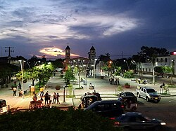
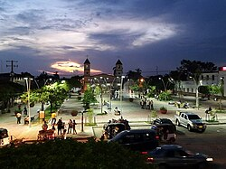

CESAR
Región:
Se encuentra ubicado al noreste del país, en las regiones Andina y Caribe.
PUNTOS DE INTERES
Valledupar
Aguachica
Pueblo Bello
Codazzi
Valledupar es una ciudad del norte de Colombia, conocida como la capital de la música vallenato. Edificios coloniales como la Iglesia de la Inmaculada Concepción bordean la Plaza Alfonso López.
AGUACHICA:Aguachica es un municipio del departamento de Cesar, Colombia, ubicado entre el valle interandino del Magdalena Medio y la Serranía de los Motilones.
PUEBLO BELLO:Pueblo Bello, es una aldea y municipio de la región norte del Departamento del Cesar, Colombia.
CODAZZI:Agustín Codazzi o simplemente Codazzi es un municipio localizado al norte del departamento del Cesar, limita al norte con San Diego, al oeste con El Paso, al sur con Becerril y al este con Venezuela.
 
